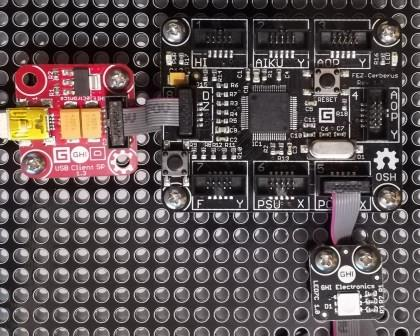

Version: 0.8.0
Led7C is connected as followed on Cerberus:

| Led7C | Mainboard |
|---|---|
| Socket Type X | Socket 5 |
using System.Threading;
using Bauland.Gadgeteer;
using GHIElectronics.TinyCLR.Pins;
namespace TestLED7C
{
static class Program
{
static void Main()
{
// LedStrip connected on Socket 4 (Type Y) of FEZ Cerberus mainboard.
Led7C led7C = new Led7C(FEZCerberus.GpioPin.Socket5.Pin3, FEZCerberus.GpioPin.Socket5.Pin4, FEZCerberus.GpioPin.Socket5.Pin5);
while (true)
{
led7C.SetColor(Led7C.LedColor.Blue);
Thread.Sleep(500);
led7C.SetColor(Led7C.LedColor.Off);
Thread.Sleep(500);
led7C.SetColor(Led7C.LedColor.Green);
Thread.Sleep(500);
led7C.SetColor(Led7C.LedColor.Off);
Thread.Sleep(500);
led7C.SetColor(Led7C.LedColor.Magenta);
Thread.Sleep(500);
led7C.SetColor(Led7C.LedColor.Off);
Thread.Sleep(500);
}
}
}
}